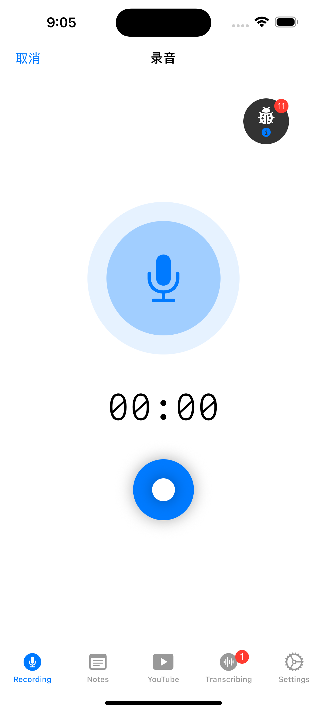
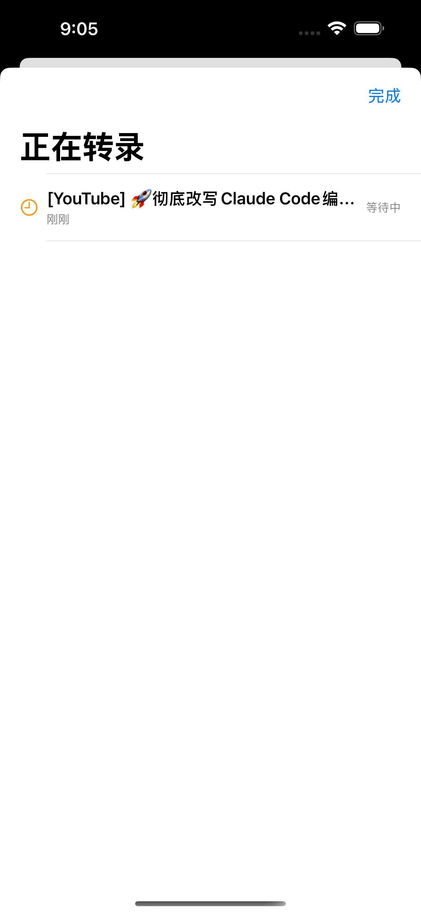
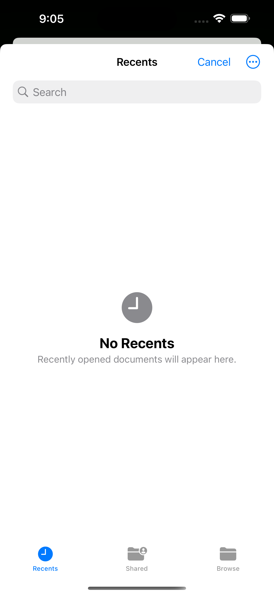
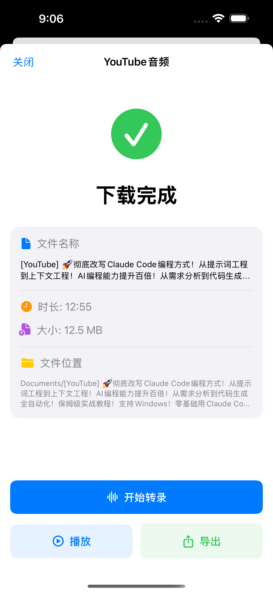

High-quality recording
Record conversations and ideas with a simple mobile interface designed for quick capture.
WeiProduct voice productivity
AI Voice Notes helps users record conversations, import audio, transcribe speech, and keep the resulting text searchable. It is built for meetings, study, interviews, and fast idea capture.

Capabilities
Instead of selling abstract AI, the product focuses on the recurring user job: capture audio, convert it to text, and keep the result useful.
Record conversations and ideas with a simple mobile interface designed for quick capture.
Use Apple speech recognition for privacy-sensitive moments or AI transcription for higher flexibility when enabled.
Bring existing audio into the workflow and convert it into readable notes for later review.
Keep transcripts, summaries, and related notes organized so voice capture becomes reusable knowledge.
Product preview
The product already has strong visual evidence. The website now treats those screenshots as product proof instead of decoration.



Use cases
Capture discussions and turn them into reviewable text so follow-ups are easier to track.
Record lectures or study audio and convert the material into notes for later search and review.
Preserve interviews in audio form while creating transcripts that are easier to edit and reference.
Capture thoughts while moving, then organize them into structured notes when there is time.
Privacy posture
The product messaging now states the important tradeoff directly: local Apple speech recognition can be used for privacy-sensitive capture, while AI transcription can be used when the user chooses that path.
Read privacy policyAvailability and support
AI Voice Notes is available on the App Store. For support or product feedback, contact WeiProduct directly.